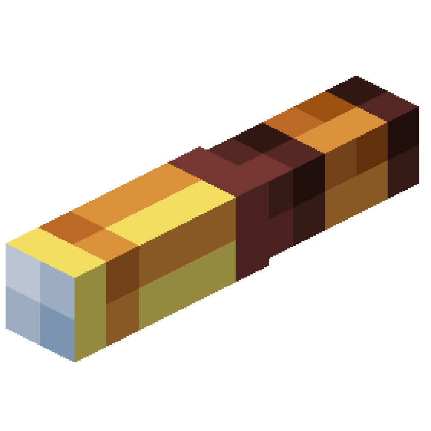
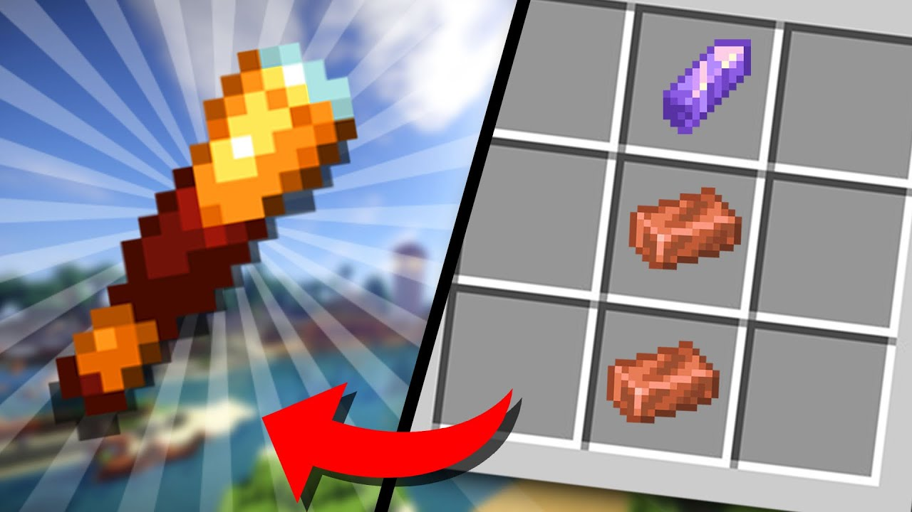

Маинкрафт
Сервера
Подзорная труба в Маинкрафт

Этот предмет был добавлен в самом новом обновление Маинкрафта.
На обновление 1.17 .
Крафтится она из двух слитков меди и одного осколка аметиста:

+79162428875
Илья Артемов